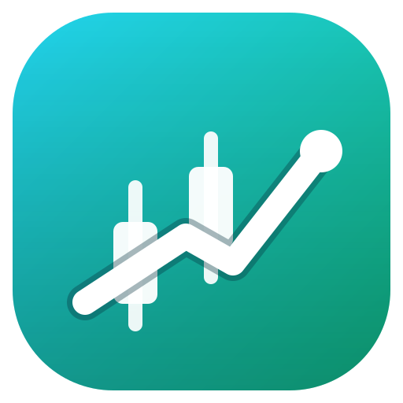

Ringkasan kondisi market dan sinyal terpenting.
Belum ada sinyal — Start engine atau jalankan backtest.
Satu engine untuk Start Bot + Dry Run: scan pair pilihan tiap interval, tulis sinyal + kelola posisi paper otomatis (SL/TP, fee+slippage). Tanpa uang asli.
Strategi, optimasi, dan riset — tanpa mengubah logika engine.
25 strategi bawaan dipertahankan semua. Centang = aktif untuk combo/monitoring. Klik nama = detail + pakai di Backtest / Lab.
Grid-search SL × TP × risiko pada data terakhir (skor freqtrade-style). Setara StrategyLab versi ringan.
| # | SL% | TP% | Ris% | Net | PF | DD% | Trades | Aksi |
|---|
Watchlist pair dengan kondisi real-time dari engine.
| Pair | Harga | 24h% | Sinyal | |
|---|---|---|---|---|
| Belum dimuat — klik Muat. | ||||
Quick view dulu, detail dibuka bila perlu.
CSV diabaikan saat multi (data diambil per pair).
Belum ada hasil.
| Metrik | Nilai |
|---|
| Metrik lanjut | Nilai |
|---|
Single-pair: bagian ini kosong. Multi-pair: ringkasan per pair tampil di sini.
Posisi paper dari Bot Engine — konfigurasi ikut Backtest.
Monitor posisi paper Bot Engine — tombol Start/Stop hanya ada satu di Dashboard. Berhenti.
| Pair | Arah | Entry | Mark | PnL* | SL | TP |
|---|---|---|---|---|---|---|
| Kosong. | ||||||
| Waktu | Pair | Arah | PnL* | Hasil |
|---|
Semua sinyal dari engine — klik baris untuk detail.
| Waktu | Pair | Arah | Harga | SL | TP |
|---|
Semua trade backtest yang pernah dijalankan (tersimpan lokal).
| Waktu | Pair | Arah | PnL | Hasil |
|---|
Interpretasi terstruktur atas data engine — bukan ramalan, bukan perintah order.
Belum ada analisis. Klik Analisis Sekarang — AI membaca sinyal, posisi paper, dan riwayat trade dari engine, lalu menyusun ringkasan DATA / ANALYSIS / OPINION.
Sinyal edukasi. Bukan nasihat keuangan. Tidak mengeksekusi order.
Provider, notifikasi, tampilan, dan data.
Cek satu per satu: Binance, Bybit, Yahoo Forex, Demo. Jika Binance/Bybit gagal (umum: diblokir jaringan/ISP), pakai Yahoo atau Demo.
| Provider | Hasil | Detail |
|---|---|---|
| Belum dites. | ||
Sinyal di close[i] → eksekusi open[i+1] + slippage. SL+TP se-candle → SL dulu. Fee 2 sisi. Sizing risiko-tetap, clamp equity×leverage. 1 posisi/waktu, compounding, max holding → EXPIRED. Metrik: winRate, PF, expectancy, avgR, maxDD+%, Sharpe, Sortino, Calmar, CAGR, exposure, streaks.